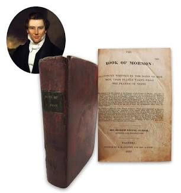

A Marvelous Work and a Wonder

Be it known unto all nations, kindreds, tongues, and people, that a great and marvelous work is about to come forth unto the children of men. The Book of Mormon, a record of the fallen people of the Americas, hath been brought forth from the dust.
This record was written upon plates of gold and hidden up unto the Lord by ancient prophets. By the gift and power of God, and through the means of the Urim and Thummim, Joseph Smith hath translated these engravings into our own tongue. It contains the fulness of the everlasting Gospel as delivered by the Savior to the ancient inhabitants of this land.
We invite all to read its pages and ask God the Eternal Father in the name of Christ if these things are true.
"Written and sealed up, and hid up unto the Lord, that they might not be destroyed; to come forth by the gift and power of God." — Title Page, Book of Mormon, 1830